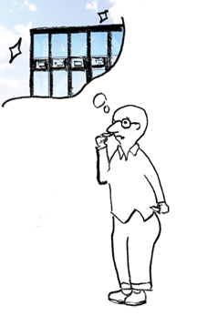
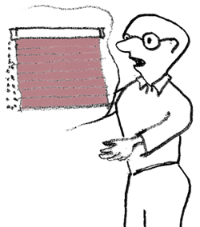
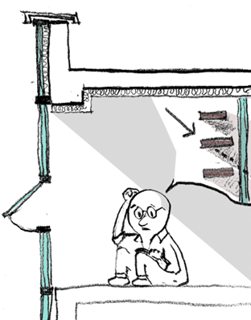

교회건물은 신자들에게 중요한 신앙의 장소로서 사용되며, 따라서 그 디자인과 구조는 예배와 교회 공동체 활동을 지원하도록 설계되어야 합니다. 하지만 단지 디자인을 위해 커튼월(Curtain Wall)을 사용하는 것은 교회당 건축에 많은 문제를 야기 합니다.
현대 건축에서 흔히 사용되는 디자인 요소 중 하나이지만, 세상에 커튼월+복층유리 아직까지 불완전한 건축요소로 교회당 같이 오랫동안 유지관리 되어야 하는 건축물에서는 사용을 자제 해야 한다고 생각합니다.
건물을 통 창으로 만드는 커튼월은 현대건축에서 빼놓을 수 없는 요소입니다. 커튼월은 뜨거운 햇빛에서 건물을 가려주지 못합니다. 커튼월을 많이 사용한 건물은 여름에 통창을 살리지 못하고 블라인드로 가려서 사용하는 경우가 많습니다. 블라인드를 해도 뜨거운 볕을 피할 수는 없습니다. 블라인드로 인해 밖에서 들어오는 복사열은 열원으로 바뀌고, 안은 여전히 뜨거워 에어컨을 가동할 수 밖에 없게 됩니다.

유리창과 별반 다를 것이 없다는 것이지요. 커튼월이 단열성능이 뛰어나다고 이야기 하기는 하지만, 복사열에 의해 내부 공기를 뜨겁게 합니다. 교회건물 입장에서 봤을 때는 멋있기는 하지만 에어컨도 뜨거운 볕을 감당하지 못하는 안타까운 결과를 볼 수 있습니다. 계속해서 성도들이 헌금은 이렇게 새어 나갑니다.

또한 커튼 월은 복잡한 구조로서 관리와 유지보수가 어렵습니다. 교회건물은 오랜 기간 동안 사용되어야 하지만, 통으로 된 유리를 닦고, 깨끗하게 유지 하는 일에는 많은 수고가 뒤따릅니다.
그리고 몇 겹짜리 복층유리(유리가 여러 겹으로 되어있는 것을 복층 유리라 합니다)는 현대 건축기술에서 아직 해결하지 못한 많은 문제가 있습니다. 바로 유리 사이로 공기가 유입되거나, 유리기밀 차단을 위한 자재의 탈락으로 단열 등의 기능을 쉽게 잃어 버린다는 단점입니다.
결로현상으로 인해 심미성을 잃어버리거나, 단열성을 잃어 건물의 온도 유지가 어려워집니다. 만약에 이렇게 복층유리에 문제가 생겨 유리만 교체 하는 것 또한 기술적으로 어렵고 많은 비용이 소요됩니다.
결국 교회의 입장에서 보면, 커튼월(비내력벽)은 아직까지는 신뢰가 어렵고, 교회건물에서의 사용은 기능적인 측면에서 여러 문제를 가져올 수 있습니다. 교회 건물의 건축 목표가 ‘이웃 사랑’ 이라면, 이웃을 섬기기 위한 재정과 노력의 목표를 위한 재원은 아쉽게 엉뚱한 곳으로 새어 나가게 되는 것입니다. 교회건물을 디자인할 때는 심미성을 고려할 수 밖에 없겠지만, 교회의 유지보수 입장을 더 중요하게 생각하며 교회를 설계해야 합니다. 교회는 궁극적으로 이웃을 사랑하고 섬기기 위해 있는 곳이지, 아름다움을 뽐내기 위해 존재하는 곳은 아니기 때문입니다. 많은 사람들이 이러한 점을 놓치고 교회 외관만 신경 쓰고 설계를 결정하는 불상사가 없었으면 합니다.
글 르듀종